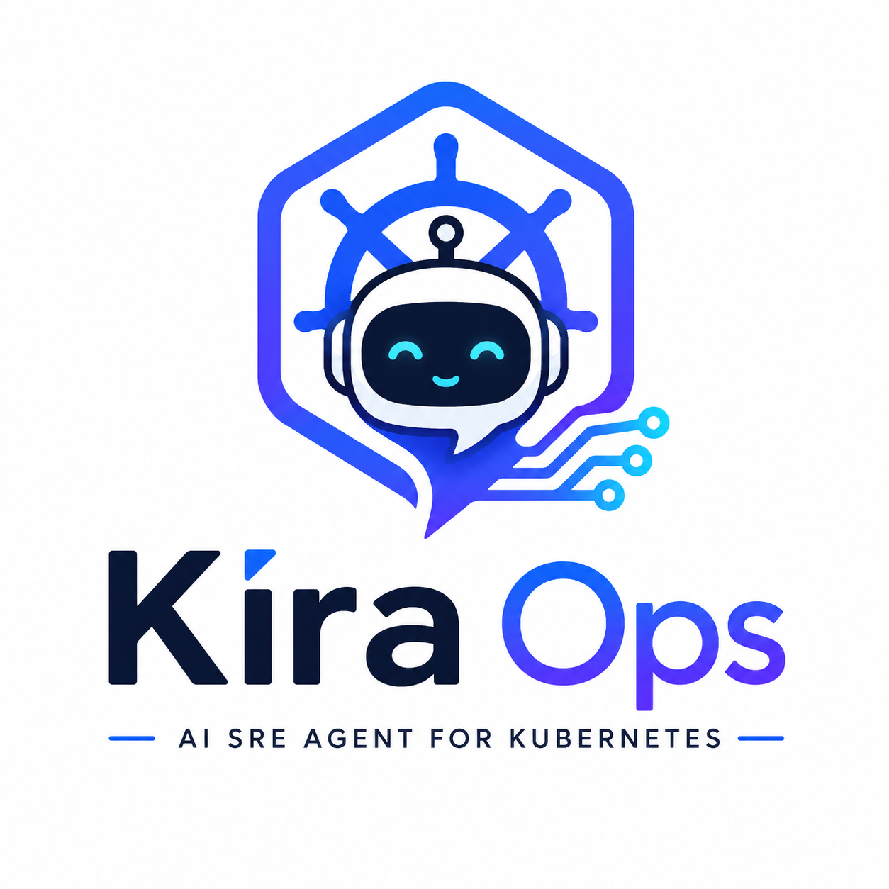

The AI SRE Engineer for Kubernetes
Building an intelligent platform for Kubernetes troubleshooting, observability, incident response, root cause analysis and cloud automation.
Stay Tuned. KiraOps is under active development.